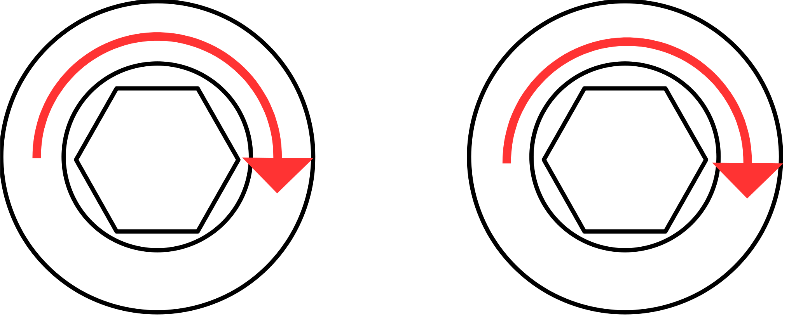

Why do the motors on one side of a robot car need to be inverted?
A relevant fact: The standard way to see which direction a motor is turning is to look down on the motor from the top, not from the perspective of the motor. Those methods give opposite directions, so this is important.
Let's imagine that we want to make a robot car with two motors, one on each side, to allow for forwards and backwards movement as well as turns. We grab two motors, both of which spin clockwise (as an example; many FTC motors actually spin counterclockwise) when powered:
This is great! We'll put one on each side of the robot, and if we give both motors positive power, then it should drive forward, right?
Both motors are still spinning clockwise, but one is spinning towards the front of the robot and the other is spinning towards the back, so our robot is turning in circles. Now that they are facing opposite directions, the clock from the perspective of one motor is flipped compared to the clock from the perspective of the other motor. If you can't grasp that image, try taking a coin, holding it to one side of you, and noting which side of the coin is facing you. Without rotating the coin, move it to the other side. Now the other side of the coin is facing you.
To solve this problem, we will determine which side of the robot is the front and reverse the motor which is spinning towards the back. For FTC, this is done during initialization when we set the direction of our motor:
motor.setDirection(DcMotor.Direction.REVERSE);
It's probably helpful to manually set the directions of all the motors during initialization so its clear to see.
public void init() {
...
leftFront.setDirection(DcMotor.Direction.REVERSE);
rightFront.setDirection(DcMotor.Direction.FORWARD);
leftBack.setDirection(DcMotor.Direction.REVERSE);
rightBack.setDirection(DcMotor.Direction.FORWARD);
}
Now our wheels spin the same way!
Of course, there are occasionally more complicated situations, such as perpendicular motors, motors running through perpendicular gears, and motors with an odd vs. even number of gears in their gearbox, but now you know how to think about it and figure out which direction they go.